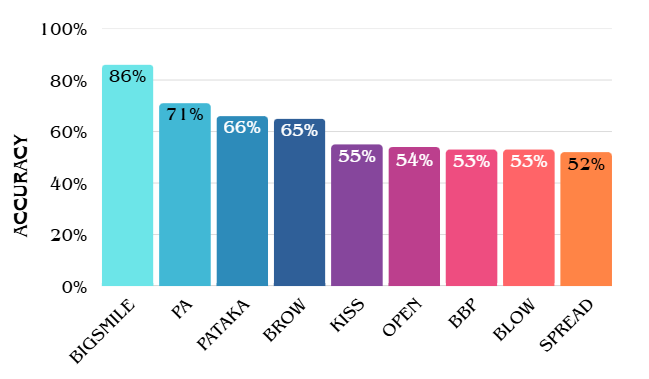

Abstract
Amyotrophic Lateral Sclerosis (ALS) is a neurodegenerative disease that affects motor neurons, causing progressive muscle weakness and loss of voluntary motor control, impacting speech and facial expressions. Current diagnostic methods, based on clinical evaluations and specialized tests, present significant delays, affecting patient survival and quality of life. This study proposes a non-invasive method to detect ALS by characterizing facial markers in the frequency domain through machine learning algorithms.
Introduction
Amyotrophic Lateral Sclerosis (ALS) is a neurodegenerative disease that affects motor neurons, causing progressive muscle weakness and loss of voluntary motor control [1]. This directly impacts critical functions such as speech and facial expressions [1]. Current diagnostic methods, based on clinical evaluations and specialized testing (electromyography, MRI) have a 10~16 months delay, which hinders early interventions and reduces patient survival. [1]. Faced with this challenge, there is a need to develop accessible and non-invasive tools for early diagnosis. Recent studies [2], [3] have explored facial motion analysis using Machine Learning (ML), demonstrating its potential. However, these studies have only focused on time-domain analysis. This work proposes an innovative method that combines frequency-domain facial signal processing with classification algorithms, offering a complementary alternative to traditional approaches.
Materials and Methods
The Toronto NeuroFace dataset [4] is used for this study, which contains video recordings of 22 participants (11 with ALS confirmed diagnosis and 11 healthy controls) performing nine orofacial diadochokinesia tasks [4]. Using the MediaPipe® framework, 440 facial markers were initially extracted for each video frame. These signals were transformed into polar coordinates (radius r and angle θ), taking the nasal tip as the reference origin. For spectral analysis, coherence was computed in the 0.1–5 Hz band between pairs of symmetrical bilateral markers, a range that encompasses the characteristic frequencies of orofacial movements during speech. Subsequently, the set was reduced to 24 marker pairs per task, using a feature importance analysis, selecting those with the greatest discriminatory power between groups. Six ML architectures were implemented for binary classification (ALS vs. control): Support Vector Machine, Random Forest, Decision Trees, Multilayer Neural Networks, K-Nearest Neighbors, and Logistic Regression. Each model was independently evaluated for the nine diadochokinesis tasks [4] using cross-validation, reporting performance metrics such as accuracy, sensitivity, and specificity.
Local Videos
Results and Discussion
Comparative analysis of the ML algorithms revealed differentiated performance across the facial tasks evaluated. The highest average accuracy was obtained on the BIGSMILE task (86%), followed by PA (71%) and PATAKA (66%).
Among the algorithms evaluated, K-Nearest Neighbors and Vector Machine stood out for their high accuracy (up to 90% in BIGSMILE). The remaining algorithms showed moderate accuracy. This variability in performance suggests that selecting specific tasks and appropriate algorithms is crucial for optimizing ALS detection through facial analysis.
Conclusions
This study demonstrates that frequency analysis of orofacial movements using ML algorithms can distinguish between ALS patients and healthy controls. The accuracy analysis suggests that the BIGSMILE task could increase the efficiency of ALS proper diagnosis.
References
- D. Richards, J. A. Morren, and E. P. Pioro, “Time to diagnosis and factors affecting diagnostic delay in amyotrophic lateral sclerosis”, Oct. 2020.
- A. Bandini, J. R. Green, B. Taati, S. Orlandi, L. Zinman, and Y. Yunusova, “Automatic Detection of Amyotrophic Lateral Sclerosis (ALS) from Video-Based Analysis of Facial Movements: Speech and Non-Speech Tasks”, May 2018.
- N. Gomes, A. Yoshida, M. Roder, G. Camargo De Oliveira, and J. Papa, “Facial Point Graphs for Amyotrophic Lateral Sclerosis Identification”, 2024.
- A. Bandini et al., “A New Dataset for Facial Motion Analysis in Individuals With Neurological Disorders”, Apr 2021.